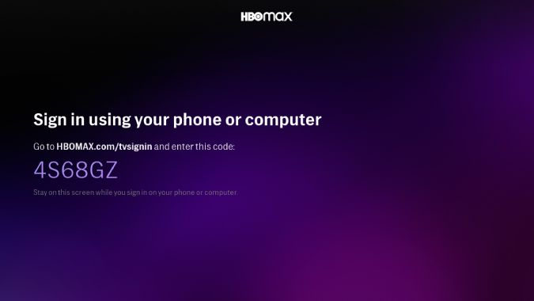

An Introduction to OpenID Connect
Presenter: Mark Lee
What is OpenID?
A set of open standards for decentralized authentication.
For context, prior to OpenID Connect, there were two earlier versions of OpenID that defined its own signature verified, URL-based callback workflow to transfer the user information to the website requesting authentication information. Meanwhile, OpenID Connect builds on top of OAuth 2.0.
Terminology
- Identity provider (IdP)
- Relying Party (RP)
- Claim
- ID Token
To get some of the common terminology out of the way, the identity provider is the "source of truth" for the given user's identity. The relying party is the website that wants to know that user's identity. A claim is "a piece of information about" a user. The ID token, unsurprisingly, is a JWT respresenting the authenticated user.
Diagram
![[Protocol Suite & Underpinnings Diagram]](images/OpenIDConnect-Map-4Feb2014.png)
In terms of the protocol suite shown in the diagram, we're primarily going to talk about the core spec, and to a lesser extent, the discovery spec.
Sidebar: A Quick Intro to OAuth 2.0
First, let's dive into the OAuth 2 protocol to see how some of the underlying protocol works.
OAuth 2.0: Protocol Flow
+--------+ +---------------+ | |--(1)- Authorization Request ->| Resource | | | | Owner | | |<-(2)-- Authorization Grant ---| | | | +---------------+ | | | | +---------------+ | |--(3)-- Authorization Grant -->| Authorization | | Client | | Server | | |<-(4)----- Access Token -------| | | | +---------------+ | | | | +---------------+ | |--(5)----- Access Token ------>| Resource | | | | Server | | |<-(6)--- Protected Resource ---| | +--------+ +---------------+
This is actually taken from the draft RFC for OAuth 2.1, which is OAuth 2.0 but incorporates all of the errata since it was published. The resource owner is the user.In many cases, the authorization server and resource server are the same thing.
OAuth 2.0: Terminology
- Scope
Space-separated list of information the client wants to access
- Grant
A way of getting authorization from a resource owner
- Client ID
Opaque token known by server & client, passed to identify the client
- Client Secret
Opaque token known by server & client, not passed to the server via a web browser
OAuth 2.0: Grant Types
- Authorization Code
- PKCE
- Client Credentials
- Device Code
- Refresh Token
Deprecated:
- Implicit Flow
- Password
There are a number of grant types defined by the OAuth 2.0 spec. I'm going to talk about the non-deprecated ones.
Authorization Code
GET /authorize?
{
response_type: code
client_id: CLIENT_ID
redirect_uri: URI
scope: name email
state: abcd1234
}The authorization code grant type is the typical way a website uses OAuth. For readability's sake, I've converted this URL query string and subsequent ones into JSON. Note that the scope parameter is space-delimited.
Authorization Code: Prompt
![[Mockup of a user's authorization prompt]](https://aaronparecki.com/oauth-2-simplified/oauth-authorization-prompt.png)
After a resource owner logs in, on the authorize page, they are usually presented with a confirmation page similar to the mockup shown here. If the app is considered "trusted", this page could be skipped.
Authorization Code: Redirect
302 Found
Location: URI?
{
code: AUTHORIZATION_CODE
state: abcd1234
}The user is then redirected back to the OAuth client.
Authorization Code: Access Token
POST /token
{
grant_type: authorization_code
code: AUTHORIZATION_CODE
redirect_uri: URI
client_id: CLIENT_ID
client_secret: CLIENT_SECRET
}
----
200 OK
{
access_token: 123token
expires_in: 3600
token_type: bearer
refresh_token: refresh1 # optional
scope: name email # optional if the user didn't change the allowed scopes
}The client can now use the authorization code to retrieve an access token. If the server supports it, it can also specify a refresh token which we'll cover later.
Proof Key for Code Exchange (PKCE)
(pronounced pixie)
GET /authorize?
{
...
code_challenge: 1234abcd
code_challenge_method: S256
}This is an extension to authorization code in that it effectively adds CSRF support to the authorization code method. The original use case for this was for mobile apps, but has since been recommended for server-side apps as well.
Client Credentials
POST /token
{
grant_type: client_credentials
client_id: CLIENT_ID
client_secret: CLIENT_SECRET
}The Client Credentials grant is used when applications request an access token to access their own resources, not on behalf of a resource owner.
Device Code
{kind=link}
This is basically the flow that happens when you pair a streaming service like YouTube or HBO MAX to your smart TV.
Refresh Code
POST /token
{
grant_type: refresh_token
refresh_token: refresh1
}Finally, the refresh code grant type allows for clients to request new access tokens before they expire.
How OpenID Connect uses OAuth 2.0
- Required scope: openid
- Optional pre-defined scopes (which map to claims):
- profile
- address
- phone
- id_token is given alongside the access_token when accessing the token endpoint
- The user info endpoint provides the claim data defined by the above scopes
OpenID Connect: Discovery
GET /.well-known/openid-configuration HTTP/1.1 Host: example.com
HTTP/1.1 200 OK Content-Type: application/json { "issuer": "https://id.example.com", "authorization_endpoint": "https://id.example.com/openid/authorize", "token_endpoint": "https://id.example.com/openid/token", "token_endpoint_auth_methods_supported": ["client_secret_basic", "private_key_jwt"], "token_endpoint_auth_signing_alg_values_supported": ["RS256", "ES256"], "userinfo_endpoint": "https://id.example.com/openid/userinfo", "jwks_uri": "https://id.example.com/openid/jwks", "response_types_supported": ["code"], "grant_types_supported": ["authorization_code"], "//": "optional", "subject_types_supported": ["public", "pairwise"], "id_token_signing_alg_values_supported": ["RS256"] }
As mentioned earlier, the discovery spec is a separate spec from the core spec. It describes a well-known URI endpoint that returns various metadata about the OpenID Connect implementation.